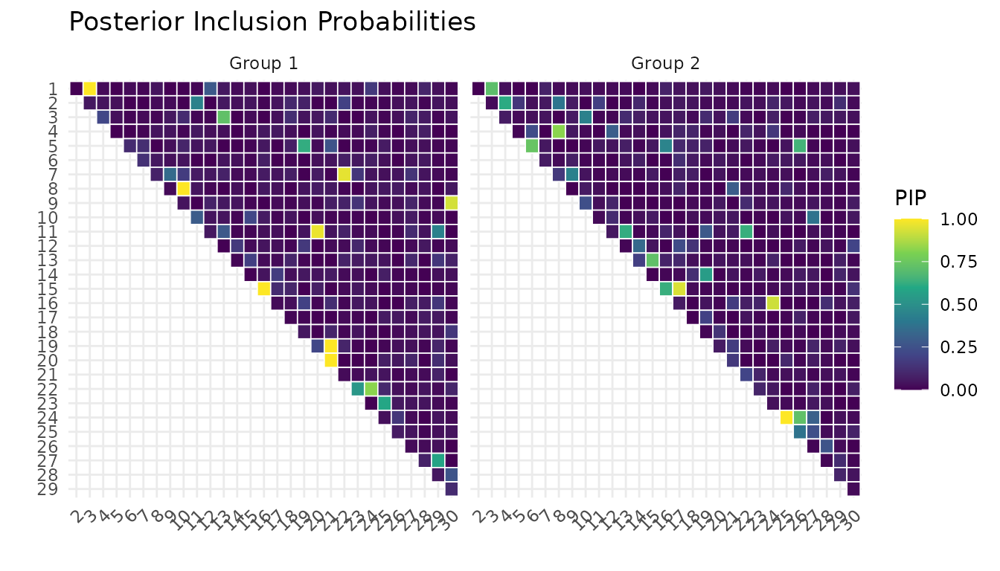
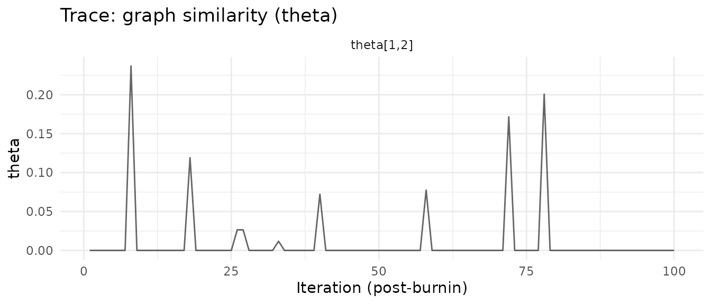
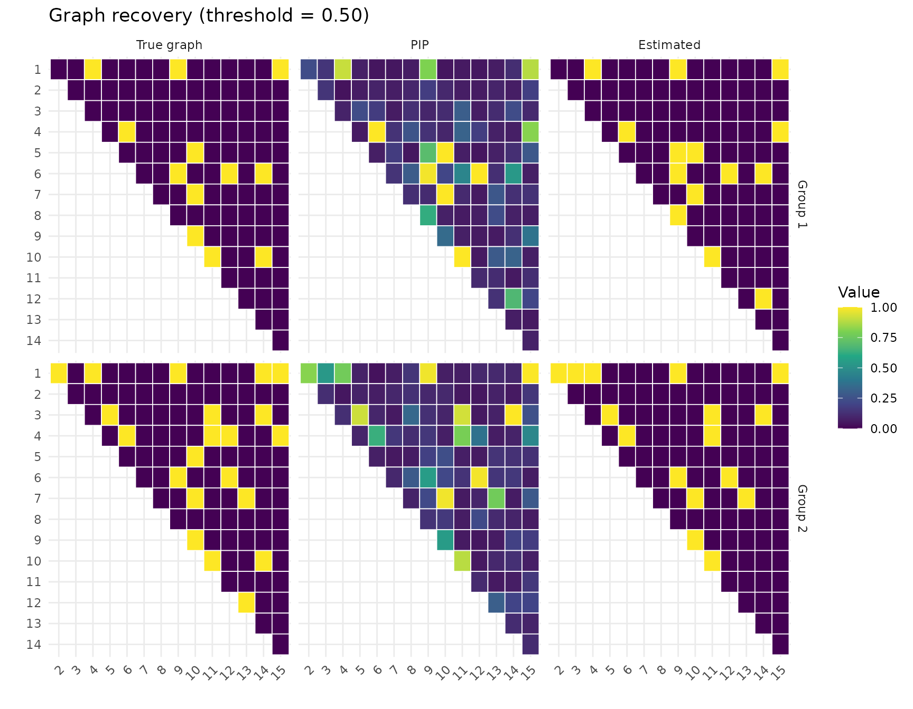
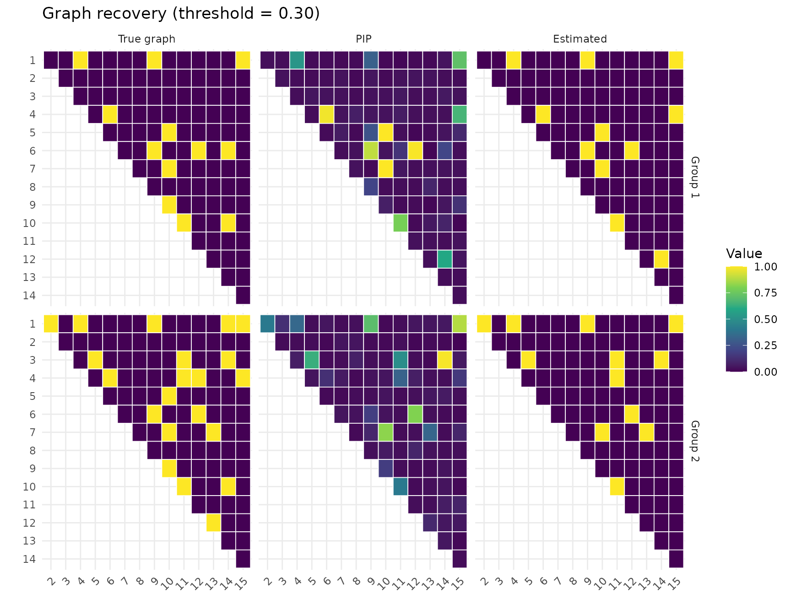

Scalable Inference with the SSVS Method
ssvs-scalable-method.RmdOverview
Version 0.2.0 of multiGGM adds a second inference method: the spike-and-slab continuous shrinkage prior of Shaddox et al. (2018, Statistics in Biosciences). This method replaces the G-Wishart prior and Wang-Li exchange algorithm with a column-wise Gibbs sampler that scales to graphs with nodes.
Select the method via the method argument:
# Original G-Wishart method (default, best for small p)
fit_gw <- multiggm_mcmc(data_list, method = "gwishart")
# Scalable SSVS method (for larger p)
fit_ssvs <- multiggm_mcmc(data_list, method = "ssvs")Both methods estimate the same quantities—group-specific precision
matrices
,
adjacency matrices
,
graph similarity parameters
,
and edge-specific log-odds
—and
the output objects have an identical structure. All post-processing
functions (pip_edges, posterior_pcor,
plot, etc.) work with either method.
When to use each method
| Scenario | Recommended method |
|---|---|
| , need exact G-Wishart inference | "gwishart" |
| , exploratory analysis | "ssvs" |
| , any use case |
"ssvs" (G-Wishart becomes prohibitively slow) |
| Comparing both priors on the same data | Run both, compare PIPs |
Quick start example
library(multiGGM)
sim <- simulate_multiggm(K = 2, p = 30, n = 100, seed = 42)
fit <- multiggm_mcmc(
data_list = sim$data_list,
method = "ssvs",
burnin = 200,
nsave = 100,
seed = 123
)
# TODO add section on multiple chains, how to use them and how to evaluate convergence, and when it is recommended to use more than one chain
summary(fit, pip_threshold = 0.5)
#> multiGGM MCMC Summary
#> =====================
#> Groups (K): 2 | Nodes (p): 30 | Posterior draws: 100
#>
#> Acceptance rates:
#> gamma (edge toggle): 24.0%
#> theta (within-model): 2.3%
#> nu (edge log-odds): 43.2%
#>
#> Selected edges (PIP >= 0.5 ):
#> Group 1 : 14 edges
#> Group 2 : 14 edges
#>
#> Graph similarity (theta):
#> theta[1,2]: mean = 0.009, P(nonzero) = 9.0%
plot(fit, type = "pip")
plot(fit, type = "trace_theta")
Scalability benchmarks
The table below shows wall-clock times for 200 burn-in + 100 saved iterations with groups and observations per group, measured on an Apple M1 processor.
| SSVS | G-Wishart | Speedup | |
|---|---|---|---|
| 10 | 0.1 s | 0.8 s | 6x |
| 20 | 0.7 s | 10.9 s | 17x |
| 30 | 1.7 s | 104.9 s | 63x |
| 50 | 7.5 s | (infeasible) | — |
The speedup increases with because the G-Wishart method’s cost grows as per iteration (due to per-edge exchange proposals and BIPS clique updates), while the SSVS method grows as (column-wise Gibbs sweeps with rank-1 covariance updates).
How the two methods differ
Both methods share the same Markov random field (MRF) prior that borrows strength across groups, and the same Metropolis-Hastings updates for the graph similarity parameters and edge-specific log-odds . They differ only in how the precision matrices and graphs are sampled.
G-Wishart method (method = "gwishart")
The original Peterson et al. (2015) approach places a G-Wishart prior on each precision matrix. Sampling proceeds via the Wang-Li (2012) exchange algorithm:
-
For each edge
in each group
:
- Compute a Bernoulli proposal probability from the G-Wishart
posterior ratio (
log_H) and the MRF similarity term. - If the proposed graph differs, sample a new precision matrix from
the G-Wishart conditional (
GWishart_NOij_Gibbs). - Accept or reject via an exchange ratio involving G-Wishart pdf
evaluations (
log_GWishart_NOij_pdf). - Update the precision matrix from the posterior conditional.
- Compute a Bernoulli proposal probability from the G-Wishart
posterior ratio (
-
After all edges: refresh the full precision matrix
via BIPS (Block Incomplete Partial correlation Sampling) using maximal
clique decomposition (
GWishart_BIPS_maximumClique).
This requires edge proposals per group, each involving – matrix operations, plus an additional BIPS step.
SSVS method (method = "ssvs")
The Shaddox et al. (2018) approach replaces the G-Wishart prior with a spike-and-slab normal prior on each off-diagonal precision element:
where (spike vs. slab), and an exponential prior on diagonal elements: . Because this prior has a tractable normalizing constant, sampling uses a direct column-wise Gibbs sweep:
-
For each column
of the precision matrix in each group
:
- Compute the Schur complement from the current covariance (no matrix inversion needed).
- Form the posterior precision , where contains or depending on current edge inclusion.
- Sample the off-diagonal column from its multivariate normal conditional: .
- Sample the diagonal from a Gamma conditional: .
- Rank-1 covariance update: update directly from the new column without any full matrix inversion.
- Update edge indicators via posterior spike-slab odds, incorporating the MRF prior analytically through the conditional inclusion probability.
There is no exchange algorithm, no BIPS clique step, and no trans-dimensional moves. Each iteration costs column sweeps, each for the Cholesky solve and rank-1 update, giving total per group per iteration.
What stays the same
- The MRF normalizing constant uses the same exact enumeration over binary vectors (feasible when is small).
- The update (between-model spike/slab toggle + within-model Gamma proposal) and the update (MH with Beta proposal) are identical in both methods.
Key differences at a glance
| Aspect | G-Wishart | SSVS |
|---|---|---|
| Precision prior | G-Wishart | Spike-slab / |
| Graph sampling | Exchange algorithm (MH per edge) | Posterior Bernoulli from spike-slab odds |
| Precision sampling | NOij Gibbs per edge + BIPS clique | Column-wise Gaussian conditional |
| Covariance updates | Full inversion after BIPS | Rank-1 incremental update |
| Complexity/iter | ||
| Scalability | demonstrated |
SSVS hyperparameters
Default values
The SSVS-specific hyperparameters and their defaults are:
| Parameter | Default | Role |
|---|---|---|
v0 |
Spike variance (small, effectively zeroes the edge) | |
v1 |
Slab variance (large, allows substantial precision values) | |
lambda |
1 | Exponential rate for diagonal elements |
The variance inflation ratio controls edge selection sensitivity. The prior edge inclusion probability adapts to the dimension: , which favors sparse graphs as grows.
These defaults follow Wang (2015, Bayesian Analysis), “Scaling it up: stochastic search structure learning in graphical models,” which introduced the SSVS approach for single GGMs. The multiGGM implementation extends it to multiple graphs by adding MRF-coupled edge indicators.
Common hyperparameters (shared with G-Wishart)
| Parameter | Default | Role |
|---|---|---|
a, b
|
1, 4 | Beta(1, 4) prior on edge inclusion log-odds ; gives prior |
alpha, beta
|
2, 5 | Gamma(2, rate=5) slab prior on ; mean = 0.4 |
w |
0.9 | ; strong prior belief that groups share structure |
alpha_prop, beta_prop
|
1, 1 | Gamma proposal for MH step (scale parameterization) |
Tuning recommendations
-
v0andv1: The defaults work well for standardized data. If your data are on a very different scale, you may need to adjust. A largerv1allows stronger partial correlations; a smallerv0provides stricter edge selection. -
lambda: Controls diagonal shrinkage. The default of 1 is generally safe. Increasinglambdaadds regularization to the diagonal. -
burninandnsave: The SSVS sampler typically mixes faster than G-Wishart, so you may need fewer iterations. Start withburnin = 5000, nsave = 5000and check trace plots. For production runs, Shaddox et al. (2018) usedburnin = 40000, nsave = 80000. -
aandb: Decreasebfor denser graphs (e.g., Beta(1, 1) for uniform prior on edge probability) or increase for sparser graphs (e.g., Beta(1, 9) for $$10% prior edge probability).
Passing custom hyperparameters
fit <- multiggm_mcmc(
data_list = sim$data_list,
method = "ssvs",
hyper = list(
v0 = 0.01^2, # tighter spike
v1 = 100^2 * 0.01^2, # wider slab
lambda = 2, # stronger diagonal shrinkage
a = 1, b = 9, # sparser prior (Beta(1,9))
alpha = 2, beta = 5,
w = 0.5, # less certain groups are related
alpha_prop = 1, beta_prop = 1
),
burnin = 5000,
nsave = 5000,
seed = 42
)Comparing both methods on the same data
When is small enough to run both, comparing results provides a useful robustness check.
sim_small <- simulate_multiggm(K = 2, p = 15, n = 100, seed = 42, graph_type = "hub")
fit_gw <- multiggm_mcmc(
data_list = sim_small$data_list,
method = "gwishart",
burnin = 2000,
nsave = 1000,
seed = 123
)
fit_ssvs <- multiggm_mcmc(
data_list = sim_small$data_list,
method = "ssvs",
hyper = list(
v0 = 0.001,
v1 = 1,
lambda = 1,
a = 1, b = 4,
alpha = 2, beta = 5,
w = 0.9, # less certain groups are related
alpha_prop = 1, beta_prop = 1),
burnin = 2000,
nsave = 1000,
seed = 123
)
pip_gw <- pip_edges(fit_gw)
pip_ssvs <- pip_edges(fit_ssvs)
# Compare PIPs for group 1 (upper triangle only)
idx <- upper.tri(pip_gw[, , 1])
cat(sprintf("Correlation of PIPs (Group 1): %.3f\n",
cor(pip_gw[, , 1][idx], pip_ssvs[, , 1][idx])))
#> Correlation of PIPs (Group 1): 0.930
cat(sprintf("G-Wishart edges (PIP > 0.5): %d\n",
sum(pip_gw[, , 1][idx] > 0.5)))
#> G-Wishart edges (PIP > 0.5): 14
cat(sprintf("SSVS edges (PIP > 0.5): %d\n",
sum(pip_ssvs[, , 1][idx] > 0.5)))
#> SSVS edges (PIP > 0.5): 10Recovery comparison
par(mfrow = c(2, 1))
cm_gw <- plot_recovery(fit_gw, sim_small$adj_list, pip_threshold = 0.5)
cm_ssvs <- plot_recovery(fit_ssvs, sim_small$adj_list, pip_threshold = 0.3)
for (method_name in c("G-Wishart", "SSVS")) {
cm <- if (method_name == "G-Wishart") cm_gw else cm_ssvs
for (k in seq_along(cm)) {
cat(sprintf("%s Group %d: TPR=%.2f, FPR=%.2f\n",
method_name, k, cm[[k]]["TPR"], cm[[k]]["FPR"]))
}
}
#> G-Wishart Group 1: TPR=0.83, FPR=0.04
#> G-Wishart Group 2: TPR=0.71, FPR=0.01
#> SSVS Group 1: TPR=0.75, FPR=0.02
#> SSVS Group 2: TPR=0.57, FPR=0.00Running multiple chains
Both methods support running multiple independent MCMC chains for convergence assessment. Because the SSVS method is faster per iteration, running multiple chains is more practical at larger dimensions:
fit_mc <- multiggm_mcmc(
data_list = sim$data_list,
method = "ssvs",
burnin = 2000,
nsave = 1000,
nchains = 3,
parallel = TRUE,
seed = 42
)
# Compare PIPs across chains to check convergence
pip_c1 <- pip_edges(fit_mc, chain = 1)
pip_c2 <- pip_edges(fit_mc, chain = 2)
pip_c3 <- pip_edges(fit_mc, chain = 3)
idx <- upper.tri(pip_c1[, , 1])
cat(sprintf("PIP correlation (chains 1-2): %.3f\n",
cor(pip_c1[, , 1][idx], pip_c2[, , 1][idx])))
#> PIP correlation (chains 1-2): 0.970
cat(sprintf("PIP correlation (chains 1-3): %.3f\n",
cor(pip_c1[, , 1][idx], pip_c3[, , 1][idx])))
#> PIP correlation (chains 1-3): 0.954See the Getting Started vignette for a complete walkthrough of multi-chain diagnostics, including overlaid trace plots and pooling results across chains.
References
Peterson, C.B., Stingo, F.C. & Vannucci, M. (2015). Bayesian inference of multiple Gaussian graphical models. Journal of the American Statistical Association, 110(509), 159–174.
Shaddox, E., Stingo, F.C., Peterson, C.B., et al. (2018). A Bayesian approach for learning gene networks underlying disease severity in COPD. Statistics in Biosciences, 10(1), 59–85.
Wang, H. (2015). Scaling it up: stochastic search structure learning in graphical models. Bayesian Analysis, 10(2), 351–377.
Wang, H. & Li, S.Z. (2012). Efficient Gaussian graphical model determination under G-Wishart prior distributions. Electronic Journal of Statistics, 6, 168–198.